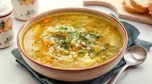
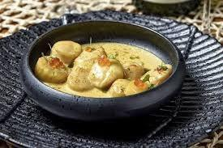
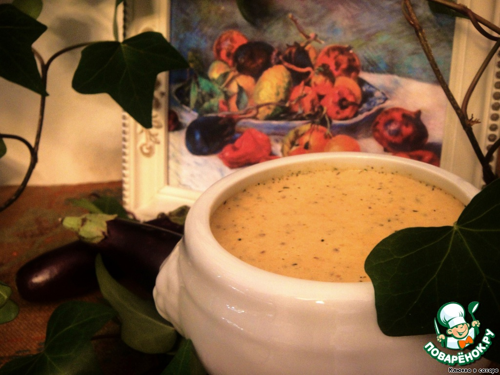

Ромашка

097 536 04 80
Кухня |
Холодні страви |
Гарячі страви |
Десерти |
||
|---|---|---|---|---|---|
Салати |
Закуски |
Перші страви |
Другі страви |
||
Російська |
Вінегрет  |
Язик з хріном |
Щи з квашеною капустою |
Вареники з картоплею |
Печені яблука з медом |
Олів'є |
Холодець яловичиний |
Розсольник домашній  |
Карасі запечені в сметані |
Блінчатий пиріг |
|
Оселедець під "шубою" |
Судак заливний |
М'ясна солянка |
Колети "Пожарський" |
Тістечко "Картопля" |
|
Іспанська |
Севіче з гребінців  |
Емпанадас |
Хлібний суп з часником |
Паелья з морепродуктами |
Чуррос |
Тімбал з авокадо і тунця |
Ахотомате |
Австурійська фабада  |
Свиняче РАКС |
Альмойшавена |
|
Квасоля з шинкою |
Чанфайна |
Рибний суп з манними галушками  |
Тортілья картопляна |
Бунуэлос |
|
Французька |
Вогезький салат |
Рійет з курки |
Баклажанний крем-суп "Ренуар"  |
Картопля гратен |
Бриоши |
Салат "Панзанелла" |
Делісьез з сиру |
Французький гарбузовий суп  |
Гратін з птиці |
Лигурийский лимонний пиріг |
|
Тар-тар |
Маринований лосось |
Суп "Конти" |
Тартифлетт | <
Саватер "Триумф"  |
|